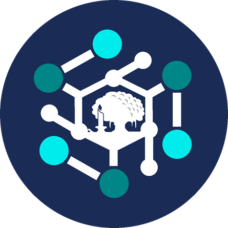

 HMIF Unand
Beranda
Tentang
Sejarah
Visi dan Misi
Struktur
Pengurus
Kabinet Budi Utomo (2023/2024)
Kabinet Edelweiss (2024/2025)
Galeri
Publikasi
Struktur Kepengurusan HMIF
Berikut adalah struktur pengurus HMIF Unand berdasarkan kabinet yang ada:
Kabinet Budi Utomo (2023/2024)
Lihat Pengurus Kabinet Budi Utomo
Kabinet Edelweiss (2024/2025)
Lihat Pengurus Kabinet Edelweiss